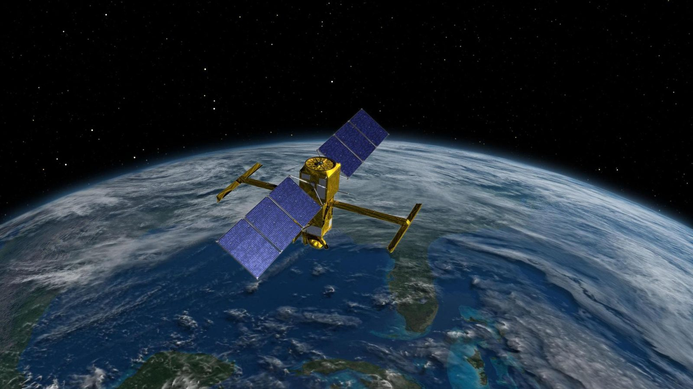

Proof, in the missions that had to work.
For nearly 48 years SSAI has delivered on the contracts where failure was not an option — 150+ Earth and space science missions, integrated, operated, and sustained for NASA, NOAA, and the nation's science agencies. The record below is structured for relevance and reference-ability: named prime contracts, the role we held, and the outcomes that followed.
A record built for relevance.
SSAI is a certified woman-owned small business under NAICS 541715 (R&D in the Physical, Engineering & Life Sciences), and also operates under NAICS 541330 (Engineering Services).
Our past performance concentrates where the government's risk is highest — flight-instrument integration and test, 24/7 mission operations, ground data systems and DAACs, and the science behind the data. The contracts and case studies that follow span multiple agencies, vehicles, and decades, and each is assembled so a source-selection team can judge scope, recency, and relevance at a glance.
Appraised at CMMI Level 3 for Development and certified to ISO 9001:2015, SSAI pairs scientific ambition with the process discipline a federal evaluator expects. References available on request through Business Development.
Where we hold the prime.
Flagship engagements where SSAI carries prime responsibility and accountability. Each is structured as Program · Customer · Role · Vehicle · Value · Period · Scope. Contract numbers and dollar values are shown for evaluator convenience and are marked for confirmation against the official record.
ESES III — Electrical Systems Engineering Services
- Program: Electrical Systems Engineering Services (ESES) III
- Customer / Agency: NASA Goddard Space Flight Center
- SSAI Role: Prime contractor — recompete win
- Vehicle: NASA GSFC prime contract
- Value: ~$493M
- Period: Period — SSAI to confirm
- Scope: The ESES organization — 180+ engineers providing instrument electrical engineering, integration & test, power, communications, and command-and-data-handling subsystem leadership across Goddard flight missions.
ESES IV — Follow-On
- Program: Electrical Systems Engineering Services (ESES) IV
- Customer / Agency: NASA Goddard Space Flight Center
- SSAI Role: Prime contractor — follow-on to ESES III
- Vehicle: NASA GSFC prime contract
- Value: Value — SSAI to confirm
- Period: Period — SSAI to confirm
- Scope: Continuation of the ESES electrical systems engineering enterprise at Goddard — sustaining instrument I&T, parts engineering, and subsystem leadership across the next generation of flight missions.
HBG — Scientific Research IDIQ
- Program: HBG scientific-research IDIQ
- Customer / Agency: NASA
- SSAI Role: Prime / IDIQ holder
- Vehicle: Indefinite-Delivery / Indefinite-Quantity (IDIQ)
- Value: ~$425M
- Period: Period — SSAI to confirm
- Scope: Multiple-award research vehicle delivering Earth-science, heliophysics, planetary, and astrophysics research support — modeling, data assimilation, calibration/validation, and science working-group leadership.
GSFC Data Systems — 80GSFC20C0044
- Program: GSFC data systems
- Customer / Agency: NASA Goddard Space Flight Center
- SSAI Role: Prime contractor
- Vehicle: Contract 80GSFC20C0044
- Value: ~$298.2M
- Period: Period — SSAI to confirm
- Scope: Ground data systems, data pipelines, and archive operations supporting Goddard science missions — building and sustaining the systems that turn downlinked observations into distributed, science-ready products.
Outcomes that are still flying.
Citable, on-orbit proof from the work itself. Each case study is structured as Program · Customer · SSAI role · Outcome — drawn from missions SSAI helped engineer, operate, or sustain across NASA and NOAA.
MERRA-2 Reanalysis
- Program: MERRA-2 atmospheric reanalysis
- Customer: NASA Goddard / Global Modeling & Assimilation Office
- SSAI Role: Data assimilation, modeling, and HPC support
- Outcome: A globally used climate reanalysis dataset; recognized with a 2019 NASA Agency Honor Award.
GOES-R Series I&T
- Program: GOES-R series geostationary weather satellites
- Customer: NASA / NOAA
- SSAI Role: Instrument integration & test; ongoing GOES operations at NOAA's Satellite Operations Facility
- Outcome: Operational weather imagery the nation depends on for forecasting and severe-storm warning.
TEMPO @ ASDC DAAC
- Program: TEMPO air-quality data pipeline
- Customer: NASA Langley — Atmospheric Science Data Center (ASDC) DAAC
- SSAI Role: Ground data systems / DAAC data pipeline
- Outcome: Hourly, daytime air-quality observations over North America, processed and distributed to researchers and the public.
SAGE III Operations
- Program: SAGE III payload operations
- Customer: NASA Langley Research Center
- SSAI Role: Payload operations center — instrument operations support
- Outcome: Sustained ozone and aerosol profiling from the ISS, supporting long-term atmospheric records.
NOAA SARSAT Search & Rescue
- Program: NOAA SARSAT search-and-rescue satellite system
- Customer: NOAA
- SSAI Role: Mission operations and sustainment support
- Outcome: Credited with helping save ~7,000 lives over 25+ years of continuous operations.
OCI / PACE · TIRS-2 · Roman WFI
- Program: OCI on PACE; TIRS-2 on Landsat-9; Wide Field Instrument on Roman
- Customer: NASA Goddard Space Flight Center
- SSAI Role: Instrument electrical engineering (SSAI-led on OCI) and subsystem engineering
- Outcome: Flight instruments delivered for ocean-color, thermal-infrared, and wide-field astrophysics observation.
Hardware on orbit, data on the ground.
From flight-instrument integration to operational weather imagery to the deep-space telescopes our engineers help bring to life — the record is visible.

NASA / Jet Propulsion Laboratory-Caltech NASA/NOAA GOES Project, Goddard Space Flight Center
NASA/NOAA GOES Project, Goddard Space Flight Center
 NASA / Goddard Space Flight Center
NASA / Goddard Space Flight Center
Reference-ready, when you are.
For contract details, periods of performance, point-of-contact references, or a capability briefing tailored to your requirement, reach SSAI Business Development. We respond to source-selection and market-research requests directly.